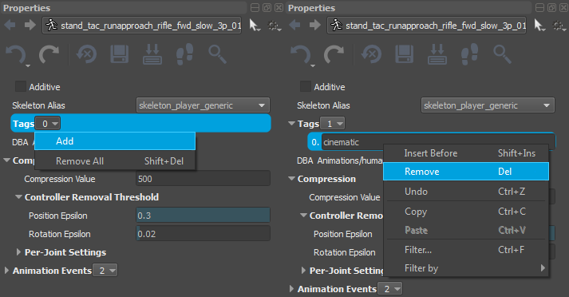
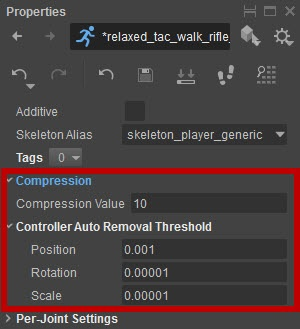
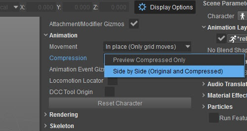
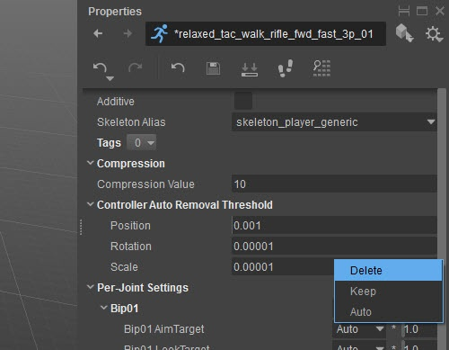
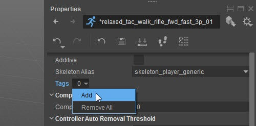
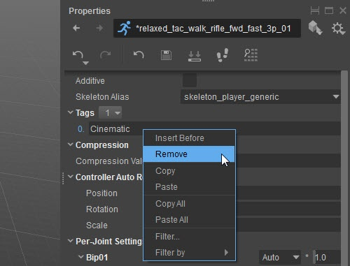

Обзор
Мы хотим иметь ресурсы, которые занимают минимальное количество памяти, но анимируются с максимально возможным качеством.
В несжатом виде анимация содержит ключ для каждого кадра в анимации и для каждого сустава который был экспортирован. Обычно мы хотим уменьшить количество соединений и шпонок, чтобы минимизировать размер. У нас есть отдельные каналы для ключей вращения и ключей положения для каждого соединения.
Для сжатия анимации персонажей мы используем команду Компилятор ресурсов инструмент (RC).

Разделы
Сжатие существующих анимаций
Чтобы настроить параметры сжатия анимации, загрузите своего персонажа, щелкнув его double в обозревателе ресурсов.
Выберите анимацию в дереве «Анимации» в обозревателе ресурсов. Обратите внимание, что файлы *.i_caf и *.animsettings должны присутствовать и быть доступны для записи. (Не внутри файла *.pak)
Примечание для пользователей Perforce: файлы *.i_caf и *.animsettings необходимо синхронизировать и извлечь локально. Если это не так, сначала используйте для этого клиент Perforce.
Настройки сжатия

- Вы можете настроить параметры сжатия и мгновенно увидеть полученную анимацию и ее размер...
- В параметрах отображения установите Сжатие чтобы Бок о бок для сравнения исходной анимации со сжатой версией.
Сжатие бок о бок

Вы можете удалить определенные на сустав настройки сжатия через контекстное меню
Настройки сжатия каждого сустава

Нажмите кнопку Сохранить кнопку на панели инструментов панели свойств или Сохранить все в Файл меню, когда закончишь
Установка настроек сжатия
Автоматическое удаление каналов (клавиши положения/поворота)
- Вы можете получить огромную экономию, автоматически удаляя соединения, которые не участвуют в анимации.
- Грубо говоря, чтобы RC узнать, влияет ли соединение на анимацию, он определяет, насколько оно перемещается во время анимации, и сравнивает это с предоставленными значениями. Если он обнаружит, что перемещается меньше, чем указано, он удалит ключи для соединения. Более высокие значения удалят больше соединений.
- Значения, которые нужно настроить для этого: Позиция для позиционного канала и Вращение для канала вращения. Это означает, что клавиши вращения и положения рассматриваются отдельно.
- Позиция и Вращение являются глобальными значениями для всей анимации.
- Аддитивная анимация имеет меньшее движение, поэтому вам нужно будет использовать меньшие значения.
- Это процесс «все или ничего»: либо все ключи сохраняются для канала (положение/ориентация), либо удаляются.
Уменьшение количества ключей внутри канала
- Предыдущий шаг полностью удалил суставы. Теперь мы хотим уменьшить количество ключей в каждом канале, поскольку на данный момент у нас есть один ключ на кадр.
- Для этого RC использует Сжатие ценность. Более высокие значения приведут к удалению большего количества ключей внутри канала.
- Сжатие Значение является глобальным значением, поэтому по умолчанию оно одинаково влияет на все соединения (хотя мы все равно можем настроить его позже на уровне детализации каждого соединения).
На этом этапе целью должно быть создание анимации, которая требует как можно меньше времени, но выглядит хорошо. Однако иногда поиграть с глобальными значениями для всей анимации недостаточно, и нам нужно будет исправить отдельные суставы, которые показывают прерывистое движение.
Индивидуальная настройка
Совместный контроль за процессом удаления
- По умолчанию для каждого соединения используются значения, позволяющие решить, удалять его или нет.
- Мы можем принудительно удалить сустав, установив флажок рядом с ним. Каналы положения и вращения будут удалены для выбранных соединений.
Посовместный контроль над величиной сжатия
- Для каждого сустава мы можем указать множитель, который применяется к Сжатие ценность. По умолчанию это значение равно 1, поэтому соединение использует глобальное значение сжатия.
Определить теги анимации
Каждая анимация может иметь список связанных с ней тегов. Теги можно использовать для:
- Выберите анимации, которые должны перейти в определенный DBA, с помощью Фильтр анимации (см. ниже)
- Примените сжатие к группе файлов анимации с помощью Предварительные настройки сжатия (см. ниже)
Вы можете найти Теги в Свойства окно при выборе анимации в Обозреватель активов.
Чтобы добавить новый тег, используйте контекстную кнопку со счетчиком тегов и выберите Добавить во всплывающем меню:
Рис4: Добавление тега 
Затем нажмите на пустую строку, чтобы ввести ее имя.
Чтобы удалить тег, вы можете использовать контекстное меню (RMB в названии тега):
Рис5: Удаление тега 
Для любопытных читателей: теги нечувствительны к регистру. Т.е. тег «CINEMATIC» будет рассматриваться так же, как «кинематографический».
Пакетное сжатие
Предустановки сжатия можно использовать для применения одного и того же набора правил сжатия к нескольким анимациям одновременно. Вы можете найти их в разделе «Сжатие» в обозревателе ресурсов.
Каждая запись предустановки сжатия определяет фильтр, который может сопоставлять анимацию в соответствии с определенным фильтром, то есть набором критериев, таких как папка, имя файла или теги. Такие критерии можно объединить с помощью логических операций в сложное условие, например «в папке и не содержит определенного тега, но имеет подстроку в имени». Если одной и той же анимации соответствует несколько пресетов, используется только первый. Вы всегда можете просмотреть, какая запись настройки сжатия была применена к анимации, в свойствах анимации (выбрав конкретную анимацию в проводнике ресурсов).
Предварительные настройки сжатия сохраняются в: <GameFolder>\Assets\Animations.pak\CompressionPresets.json.